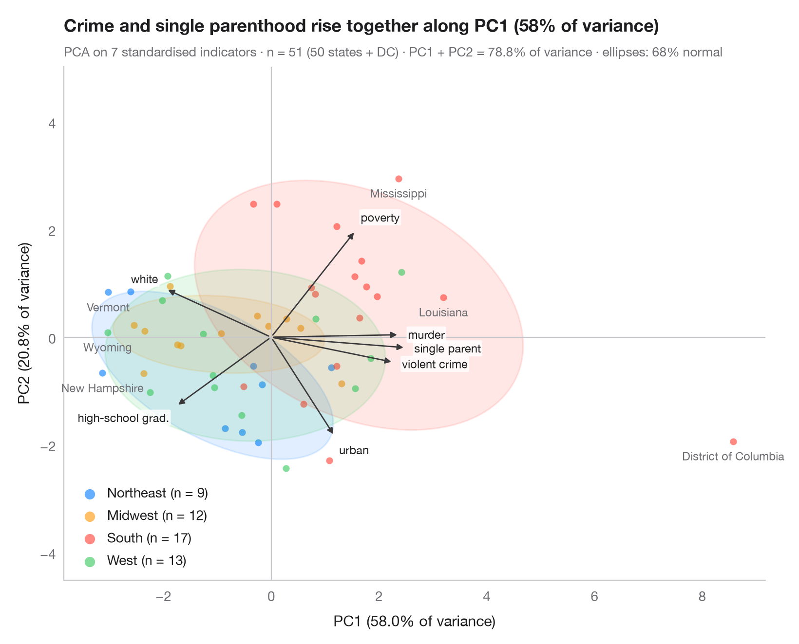

PCA バイプロット
第1・第2主成分上に、観測値と変数の負荷量を示します。

バイプロットは、同じ主成分平面上に2つのものを重ねて描きます。主成分得点（観測値ごとに1つの点、群ごとに色分けし、群ごとに 68% 正規楕円を付記）と、負荷量（変数ごとに1本の矢印）です。同じ方向を向く矢印どうしは正の相関があり、長い矢印は表示している2つの成分に大きく寄与しています。各群は、その群で値が高い変数の側に位置します。
データは scikit-learn のワインデータセットに含まれる 178 本のワイン（13 種類の化学的測定値、3品種）です。変数を標準化したうえで、sklearn.decomposition.PCA により主成分得点、負荷量、および各軸に表示している分散の割合を求めています。
コードおよび図中のテキストは英語です。
import matplotlib.pyplot as plt
import numpy as np
from matplotlib.patches import Ellipse
from scipy import stats
from sklearn.datasets import load_wine
from sklearn.decomposition import PCA
from sklearn.preprocessing import StandardScaler
# Data: 13 chemical measurements of 178 wines, standardised
wine = load_wine(as_frame=True)
X = StandardScaler().fit_transform(wine.data)
groups = np.array(["Barolo", "Grignolino", "Barbera"])[wine.target]
names = [n.replace("_", " ").replace("od280/od315 of diluted wines", "OD280/OD315")
for n in wine.feature_names]
pca = PCA(n_components=2).fit(X)
scores = pca.transform(X)
loadings = pca.components_.T * np.sqrt(pca.explained_variance_) # variable–PC correlations
var = pca.explained_variance_ratio_ * 100
fig, ax = plt.subplots(figsize=(8, 6.4))
ax.axhline(0, color="#C7C7CC", lw=0.8); ax.axvline(0, color="#C7C7CC", lw=0.8)
r68 = np.sqrt(stats.chi2.ppf(0.68, df=2))
for g, c in zip(["Barolo", "Grignolino", "Barbera"], ["#007AFF", "#FF9500", "#34C759"]):
s = scores[groups == g]
ax.scatter(*s.T, s=22, color=c, alpha=0.5, lw=0, label=f"{g} (n = {len(s)})")
# 68% normal-theory ellipse from the group covariance
vals, vecs = np.linalg.eigh(np.cov(s.T))
angle = np.degrees(np.arctan2(vecs[1, 1], vecs[0, 1]))
ax.add_patch(Ellipse(s.mean(0), *(2 * r68 * np.sqrt(vals[::-1])), angle=angle,
facecolor=c, alpha=0.12, edgecolor=c, lw=1.2))
# Loading arrows, scaled to the score cloud
scale = 0.85 * np.abs(scores).max() / np.abs(loadings).max()
nudge = {"total phenols": (0, 8), "flavanoids": (0, -9), "proanthocyanins": (-14, 8)} # untangle close arrows
for (x, y), name in zip(loadings * scale, names):
ax.annotate("", (x, y), (0, 0), arrowprops=dict(arrowstyle="-|>", color="#3A3A3C",
lw=1, mutation_scale=9))
u = np.array([x, y]) / np.hypot(x, y) # label just beyond the arrow tip
dx, dy = 6 * u + nudge.get(name, (0, 0))
ax.annotate(name, (x, y), xytext=(dx, dy), textcoords="offset points", fontsize=8.5,
color="#1D1D1F", ha="right" if name == "proanthocyanins" else "left" if u[0] > 0.3 else "right" if u[0] < -0.3 else "center",
va="bottom" if u[1] > 0.3 else "top" if u[1] < -0.3 else "center",
bbox=dict(boxstyle="round,pad=0.12", fc="white", ec="none", alpha=0.8))
ax.set_xlabel(f"PC1 ({var[0]:.1f}% of variance)")
ax.set_ylabel(f"PC2 ({var[1]:.1f}% of variance)")
ax.grid(False)
ax.set_aspect("equal", adjustable="datalim")
ax.legend(loc="lower left", markerscale=1.5, handletextpad=0.3)
ax.set_title("Three wine cultivars separate along two chemical axes", pad=26)
ax.text(0, 1.02, f"PCA on 13 standardised variables · n = {len(X)} · PC1 + PC2 = "
f"{var.sum():.1f}% of variance · ellipses: 68% normal", transform=ax.transAxes,
fontsize=9.5, color="#6E6E73")
plt.show()
図にはオプションの Statlas スタイル を使用しています。同じ見た目にするには plt.style.use("statlas.mplstyle") を追加してください。
引用方法
Statlas は Thierry Warin が作成・運営しています。研究や業務に役立った場合は、ぜひ引用してください。
Warin, T. (2026). PCA biplot. In Statlas: The Python Gallery of Statistical Graphics. https://warint.github.io/statlas/multivariate/pca-biplot/
@misc{warin2026statlas,
author = {Warin, Thierry},
title = {Statlas: The Python Gallery of Statistical Graphics},
year = {2026},
howpublished = {\url{https://warint.github.io/statlas/}},
note = {Source code: https://github.com/warint/statlas}
}